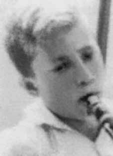

Arno
Preis
CIRCUNSTÂNCIAS DA MORTE
Arno Preis morreu em 15 de fevereiro de 1972 por ação dos órgãos de repressão na cidade de Paraíso do Norte (atual Paraíso do Tocantins), à época pertencente ao estado de Goiás, hoje Tocantins.
Documentos oficiais provenientes do Departamento de Ordem Social e Política de São Paulo (DOPS-SP) apontam que, naquele período, havia no interior do Movimento de Libertação Popular (Molipo) um agente da repressão infiltrado. Um indicativo que comprova tal fato são as inúmeras prisões e mortes de militantes desta organização a partir de novembro de 1971. Outra evidência desse contexto de perseguição organizada foi a presença ostensiva de diferentes órgãos da repressão na região, ocasião em que ocorreram as mortes e os desaparecimentos.
A versão oficial sobre sua morte foi veiculada em jornais de grande circulação. Matéria da Folha de S. Paulo, de 22 de março, apontou que Arno teria sido morto ao reagir a uma abordagem policial. Segundo essa versão, no dia 15 de março, noite de carnaval, Arno estaria no Bar São José, sede do Clube Social de Paraíso do Norte, quando em um dado momento, teria sido abordado por agentes da repressão. O policial militar Luzimar Machado de Oliveira teria lhe pedido que se identificasse, ao que Arno teria informado o nome falso que usava, Patrick McBurdy Cormick. Na mesma situação, o militante teria solicitado informações acerca de um local para dormir, recebendo como resposta que a única possibilidade que ficava a dois quilômetros do lugar em que se encontravam, tendo o policial apontado para um senhor, também chamado Luzimar, que seria motorista de táxi.
O policial Luzimar, na sequência, pediu a Arno que apresentasse seu porte de arma, já que aparentava levar um revólver. Em resposta, a vítima teria dito não possuir porte, o que fez com que os policiais o convidassem a comparecer à Delegacia de Polícia. Naquele momento, recusando-se a acompanhar os agentes da repressão, teria sacado o revólver e disparado contra dois policiais e, em seguida, corrido rumo a um terreno baldio próximo. Outro policial, Benedito Luiz Paiva, do DOPS-GO, em depoimento, assumiu que atirou em Arno, atingindo-o em uma das pernas quando este fugia da primeira abordagem e que, posteriormente, encontrou-o atrás de uma árvore.
Todos os policiais que falaram sobre o caso confirmaram em depoimento que Arno foi cercado e morto a tiros, contudo, além das dúvidas acerca da veracidade da versão oficial apresentada, não mencionaram os inúmeros ferimentos à faca ou à baioneta que Arno apresentava em seu corpo. De acordo com o relato de Ivo Sooma, amigo de Arno, o policial Luzimar sacou sua arma e, em seguida, buscando se proteger, a vítima atirou nele e em Gentil da Costa Mano, o outro policial militar presente na situação, correndo em seguida. Enquanto corria, foi atingido na perna por um tiro disparado por Benedito.
O laudo de necropsia, registrado com seu codinome, Patrick, apresenta de maneira genérica a causa da morte como decorrente de “hemorragia interna, possivelmente produzida por projétil de arma de fogo” e considerável quantidade de orifícios que se assemelhavam a tiros, provavelmente de calibre 38. Mesmo sendo vago, o documento traz indícios de que Arno poderia não ter morrido em tiroteio, diante da presença de extensas feridas produzidas por instrumento cortante, que seria faca ou baioneta.
A Comissão Especial sobre Mortos e Desaparecidos (CEMDP), logo após a descoberta de seus restos mortais, solicitou parecer do perito Celso Nenevê, que elaborou um laudo sobre o caso. O referido levantamento reforçou a suspeita de que Arno talvez ainda estivesse vivo e imobilizado quando foi cortado por um destes instrumentos pérfuro-cortantes. Posteriormente, o jornalista Luiz Maklouf Carvalho revelou a participação do então coronel do Exército Lício Augusto Ribeiro Maciel na morte de Arno, o que colaborou na desconstrução da versão oficial de morte em tiroteio decorrente de encontro casual com os agentes da repressão. Maklouf, ao se dirigir ao então ministro Nilmário Miranda, apresentou trechos da entrevista realizada com o coronel, na qual ele confirma que Arno foi “eliminado” quando estava “acuado num matagal às margens da rodovia”. Como o militante não se entregou, de acordo com Lício, ele foi alvejado pelos militares que, se utilizando de faróis de caminhões, conseguiram iluminar a área para evitar a fuga. Ainda de acordo o coronel: “foi preparada uma cortina de chumbo quente e ele que escolheu”.
O corpo de Arno foi entregue ao coveiro Milton Gomes, que trabalhava no cemitério de Paraíso do Norte, no mesmo dia de sua morte, sem identificação e atestado de óbito e com a recomendação de que fosse enterrado imediatamente e de “qualquer jeito” já que se tratava de um “porco”. O coveiro não questionou a determinação policial naquele momento mas, ao observar aquele corpo, disse a si próprio: “Isso não é um porco, este é um homem. Alguém um dia virá procurar por ele”. Neste instante, tomou a decisão de construir uma pirâmide de pedra e colocar uma cruz de madeira sobre a sepultura para delimitar o local.
Arno foi enterrado com o nome de Patrick McBurdy Cormik. De acordo com Milton, aproximadamente dez dias depois, o cemitério foi cercado por grande aparato policial. Os agentes policiais ordenaram, então, que o cadáver fosse desenterrado e as mãos fossem amputadas, fato confirmado posteriormente pela exumação. A atitude do coveiro em identificar o jazigo de Arno foi decisiva para que, 21 anos depois, seu corpo fosse localizado. A localização de seus restos mortais ocorreu apenas em 1993, após longas e difíceis buscas realizadas por seu amigo Ivo Sooma. Com o apoio da Comissão de Familiares de Mortos e Desaparecidos Políticos e da Comissão de Representação Externa da Câmara Federal, foram feitas a exumação e a identificação da ossada, esta última realizada pelo Instituto Médico-Legal do Distrito Federal, que confirmou se tratar mesmo de Arno.
A Comissão Estadual da Verdade Tereza Urban, do Estado do Paraná, realizou, em 5 de agosto de 2014, audiência pública sobre o caso de Arno e outros militantes políticos mortos e desaparecidos, da qual participaram seus irmãos João e Helga Preis. Arno foi sepultado, à época dos fatos, no cemitério de Paraíso de Tocantins, estado de Tocantins. Posteriormente, após a descoberta de seus restos mortais, e depois de ser homenageado na Faculdade de Direito da USP e na Assembleia Legislativa de Santa Catarina, foi levado para Forquilhinha (SC), cidade onde nasceu, e enterrado em 3 de maio de 1994, no cemitério da cidade.
A Comissão Nacional da Verdade localizou documento que reforça a versão de perseguição e execução premeditada de Arno Preis. Trata-se de documento produzido pela agência de Brasília do Serviço Nacional de Informações (SNI), produzido em 2 de maio de 1972, dois meses e meio após a morte de Arno. Por meio do documento, a Agência Brasília do Serviço Nacional de Informações encaminhou à Presidência da República um relatório, produzido pelo DOI-CODI do Comando Militar do Planalto, DOI/3a Brigada de Infantaria e CIE, tratando da Operação Ilha, cujo objetivo foi “localizar e desbaratar núcleos terroristas instalados no Norte do Estado de Goiás, constituídos por elementos da Aliança [sic] Libertadora Nacional (ALN), procedentes de Cuba”.
Em que pese o documento não fazer referência nominal a Arno Preis, ele é bastante claro acerca da operação de perseguição montada no norte do estado de Goiás, onde Arno foi localizado e morto. O documento sobre a Operação Ilha faz referência nominal aos seguintes militantes do Molipo: Jeová de Assis Gomes, apontado como o chefe do grupo; Boanerges de Souza Massa; Ruy Carlos Vieira Berbert; Sergio Capozzi; Jane Vanine e Otávio Ângelo.
Arno Preis died on February 15, 1972 due to the action of repression agencies in the city of Paraíso do Norte (currently Paraíso do Tocantins), at the time belonging to the state of Goiás, today Tocantins.
Official documents from the São Paulo Department of Social and Political Order (DOPS-SP) indicate that, at that time, there was an infiltrated agent of repression within the Popular Liberation Movement (Molipo). An indication that proves this fact are the numerous arrests and deaths of militants of this organization from November 1971 onwards. Another evidence of this context of organized persecution was the ostensible presence of different repression bodies in the region, when the deaths and disappearances occurred.
The official version of his death was published in major newspapers. Article in Folha de S. Paulo, on March 22, pointed out that Arno had been killed when reacting to a police approach. According to this version, on March 15th, Carnival night, Arno would be at Bar São José, headquarters of the Paraíso do Norte Social Club, when at a given moment, he would have been approached by repression agents. Military police officer Luzimar Machado de Oliveira asked him to identify himself, to which Arno informed him of the false name he used, Patrick McBurdy Cormick. In the same situation, the militant would have asked for information about a place to sleep, receiving in response that the only possibility was two kilometers from the place where they were, with the police officer pointing out a man, also called Luzimar, who would be a taxi driver.
Police officer Luzimar then asked Arno to show that he was carrying a weapon, as he appeared to be carrying a revolver. In response, the victim said he did not possess possession, which led the police officers to invite him to appear at the Police Station. At that moment, refusing to accompany the repression agents, he allegedly took out his revolver and shot two police officers and then ran towards a nearby vacant lot. Another police officer, Benedito Luiz Paiva, from DOPS-GO, in his statement, admitted that he shot Arno, hitting him in one of his legs when he was fleeing the first approach and that he later found him behind a tree.
All the police officers who spoke about the case confirmed in their testimony that Arno was surrounded and shot dead, however, in addition to doubts about the veracity of the official version presented, they did not mention the numerous knife or bayonet injuries that Arno had on his body. According to the report of Ivo Sooma, Arno's friend, police officer Luzimar pulled out his gun and then, seeking to protect himself, the victim shot him and Gentil da Costa Mano, the other military police officer present in the situation, then ran away. While running, he was hit in the leg by a shot fired by Benedito.
The autopsy report, registered with his code name, Patrick, generically presents the cause of death as resulting from “internal bleeding, possibly produced by a firearm projectile” and a considerable number of holes that resembled gunshots, probably from a .38 caliber. Even though it is vague, the document provides evidence that Arno may not have died in a shootout, given the presence of extensive wounds produced by a cutting instrument, which would be a knife or bayonet.
The Special Commission on the Dead and Missing (CEMDP), shortly after the discovery of their remains, requested an opinion from expert Celso Nenevê, who prepared a report on the case. The aforementioned survey reinforced the suspicion that Arno was perhaps still alive and immobilized when he was cut by one of these piercing-cutting instruments. Subsequently, journalist Luiz Maklouf Carvalho revealed the participation of the then Army colonel Lício Augusto Ribeiro Maciel in Arno's death, which helped deconstruct the official version of death in a shootout resulting from a chance encounter with agents of repression. Maklouf, when addressing the then minister Nilmário Miranda, presented excerpts from the interview carried out with the colonel, in which he confirms that Arno was “eliminated” when he was “cornered in a thicket on the banks of the highway”. As the militant did not surrender, according to Lício, he was shot by the military who, using truck headlights, managed to illuminate the area to prevent escape. Still according to the colonel: “a curtain of hot lead was prepared and he chose it”.
Arno's body was handed over to the gravedigger Milton Gomes, who worked at the Paraíso do Norte cemetery, on the same day of his death, without identification or a death certificate and with the recommendation that he be buried immediately and in “any way” as he was a “pig”. The gravedigger did not question the police determination at that moment, but upon observing the body, he said to himself: "That's not a pig, that's a man. Someone will one day come looking for him." At that moment, he made the decision to build a stone pyramid and place a wooden cross over the tomb to delimit the place.
Arno was buried under the name Patrick McBurdy Cormik. According to Milton, approximately ten days later, the cemetery was surrounded by large police apparatus. Police agents then ordered the corpse to be dug up and the hands to be amputated, a fact later confirmed by exhumation. The gravedigger's attitude in identifying Arno's tomb was decisive in the fact that, 21 years later, his body was located. His remains were only located in 1993, after long and difficult searches carried out by his friend Ivo Sooma. With the support of the Commission for Relatives of the Political Dead and Missing and the External Representation Commission of the Federal Chamber, the exhumation and identification of the remains were carried out, the latter carried out by the Federal District Medical-Legal Institute, which confirmed that it was indeed Arno.
The Tereza Urban State Truth Commission, from the State of Paraná, held, on August 5, 2014, a public hearing on the case of Arno and other dead and missing political activists, in which her brothers João and Helga Preis participated. Arno was buried, at the time of the events, in the Paraíso de Tocantins cemetery, state of Tocantins. Later, after the discovery of his mortal remains, and after being honored at the USP Faculty of Law and the Legislative Assembly of Santa Catarina, he was taken to Forquilhinha (SC), the city where he was born, and buried on May 3, 1994, in the city's cemetery.
The National Truth Commission located a document that reinforces the version of premeditated persecution and execution of Arno Preis. This is a document produced by the Brasília agency of the National Information Service (SNI), produced on May 2, 1972, two and a half months after Arno's death. Through the document, the Brasília Agency of the National Information Service sent a report to the Presidency of the Republic, produced by DOI-CODI of the Planalto Military Command, DOI/3rd Infantry Brigade and CIE, dealing with Operation Island, whose objective was “to locate and dismantle terrorist groups installed in the North of the State of Goiás, made up of elements of the National Liberation Alliance [sic] (ALN), coming from Cuba”.
Although the document does not make reference to Arno Preis by name, it is quite clear about the persecution operation mounted in the north of the state of Goiás, where Arno was located and killed. The document on Operation Island makes nominal reference to the following Molipo militants: Jeová de Assis Gomes, appointed as the leader of the group; Boanerges de Souza Massa; Ruy Carlos Vieira Berbert; Sergio Capozzi; Jane Vanine and Otávio Ângelo.
Arno Preis murió el 15 de febrero de 1972 debido a la acción de organismos de represión en la ciudad de Paraíso do Norte (actualmente Paraíso do Tocantins), entonces perteneciente al estado de Goiás, hoy Tocantins.
Documentos oficiales del Departamento de Orden Social y Político de São Paulo (DOPS-SP) indican que, en ese momento, había un agente de represión infiltrado en el seno del Movimiento de Liberación Popular (Molipo). Un indicio que prueba este hecho son las numerosas detenciones y muertes de militantes de esta organización a partir de noviembre de 1971. Otra evidencia de este contexto de persecución organizada fue la presencia ostensible de diferentes cuerpos de represión en la región, cuando ocurrieron las muertes y desapariciones.
La versión oficial de su muerte se publicó en los principales periódicos. Un artículo de Folha de S. Paulo del 22 de marzo señalaba que Arno había sido asesinado al reaccionar ante un acercamiento policial. Según esta versión, el 15 de marzo, noche de Carnaval, Arno se encontraría en el Bar São José, sede del Club Social Paraíso do Norte, cuando en un momento dado habría sido abordado por agentes de represión. El policía militar Luzimar Machado de Oliveira le pidió que se identificara, a lo que Arno le informó del nombre falso que utilizaba, Patrick McBurdy Cormick. En la misma situación, el militante habría pedido información sobre un lugar para dormir, recibiendo como respuesta que la única posibilidad estaba a dos kilómetros del lugar donde se encontraban, siendo el policía señalando a un hombre, también llamado Luzimar, que sería taxista.
Luego, el policía Luzimar le pidió a Arno que mostrara que portaba un arma, ya que parecía portar un revólver. En respuesta, la víctima dijo que no poseía posesión, lo que motivó que los policías lo invitaran a presentarse en la Comisaría. En ese momento, negándose a acompañar a los agentes de represión, presuntamente sacó su revólver y disparó contra dos policías para luego correr hacia un terreno baldío cercano. Otro policía, Benedito Luiz Paiva, del DOPS-GO, en su declaración, admitió que disparó a Arno, alcanzándolo en una de sus piernas cuando huía del primer acercamiento y que luego lo encontró detrás de un árbol.
Todos los policías que hablaron sobre el caso confirmaron en su testimonio que Arno fue rodeado y asesinado a tiros, sin embargo, además de las dudas sobre la veracidad de la versión oficial presentada, no mencionaron las numerosas heridas de cuchillo o bayoneta que Arno tenía en su cuerpo. Según el relato de Ivo Sooma, amigo de Arno, el policía Luzimar sacó su arma y luego, tratando de protegerse, la víctima le disparó y Gentil da Costa Mano, el otro policía militar presente en la situación, luego se dio a la fuga. Mientras corría, recibió un disparo en la pierna de Benedito.
El informe de la autopsia, registrado con su nombre clave, Patrick, presenta genéricamente como causa de muerte una “hemorragia interna, posiblemente producida por un proyectil de arma de fuego” y un número considerable de agujeros que asemejaban disparos, probablemente de calibre .38. Aunque es vago, el documento aporta pruebas de que Arno pudo no haber muerto en un tiroteo, dada la presencia de heridas extensas producidas por un instrumento cortante, que sería un cuchillo o una bayoneta.
La Comisión Especial de Muertos y Desaparecidos (CEMDP), poco después del descubrimiento de sus restos, solicitó el dictamen del perito Celso Nenevê, quien elaboró un informe sobre el caso. El estudio antes mencionado reforzó la sospecha de que Arno quizás todavía estaba vivo e inmovilizado cuando fue cortado por uno de estos instrumentos punzantes y cortantes. Posteriormente, el periodista Luiz Maklouf Carvalho reveló la participación del entonces coronel del Ejército Lício Augusto Ribeiro Maciel en la muerte de Arno, lo que ayudó a deconstruir la versión oficial de la muerte en un tiroteo resultante de un encuentro casual con agentes de la represión. Maklouf, al dirigirse al entonces ministro Nilmário Miranda, presentó extractos de la entrevista realizada al coronel, en los que confirma que Arno fue “eliminado” cuando estaba “arrinconado en un matorral a orillas de la carretera”. Como el militante no se rindió, según Lício, fue baleado por los militares que, utilizando las luces de los camiones, lograron iluminar la zona para impedir la fuga. Aún según el coronel: “se preparó una cortina de plomo candente y él la eligió”.
El cuerpo de Arno fue entregado al sepulturero Milton Gomes, que trabajaba en el cementerio de Paraíso do Norte, el mismo día de su muerte, sin identificación ni certificado de defunción y con la recomendación de que fuera enterrado inmediatamente y "de cualquier forma" por ser un "cerdo". El sepulturero no cuestionó la determinación policial en ese momento, pero al observar el cuerpo, se dijo: "Ese no es un cerdo, es un hombre. Un día alguien vendrá a buscarlo". En ese momento tomó la decisión de construir una pirámide de piedra y colocar una cruz de madera sobre la tumba para delimitar el lugar.
Arno fue enterrado con el nombre de Patrick McBurdy Cormik. Según Milton, aproximadamente diez días después, el cementerio fue rodeado por un gran aparato policial. Los agentes policiales ordenaron entonces desenterrar el cadáver y amputarle las manos, hecho confirmado posteriormente mediante la exhumación. La actitud del sepulturero a la hora de identificar la tumba de Arno fue decisiva para que, 21 años después, se localizara su cuerpo. Sus restos no fueron localizados hasta 1993, tras largas y difíciles búsquedas llevadas a cabo por su amigo Ivo Sooma. Con el apoyo de la Comisión de Familiares de Muertos y Desaparecidos Políticos y la Comisión de Representación Externa de la Cámara Federal, se procedió a la exhumación e identificación de los restos, esta última realizada por el Instituto Médico Legal del Distrito Federal, que confirmó que efectivamente se trataba de Arno.
La Comisión de la Verdad del Estado Urbano Tereza, del Estado de Paraná, realizó, el 5 de agosto de 2014, una audiencia pública sobre el caso de Arno y otros activistas políticos muertos y desaparecidos, en la que participaron sus hermanos João y Helga Preis. Arno fue enterrado, en el momento de los hechos, en el cementerio Paraíso de Tocantins, estado de Tocantins. Posteriormente, tras el descubrimiento de sus restos mortales, y después de ser homenajeado en la Facultad de Derecho de la USP y en la Asamblea Legislativa de Santa Catarina, fue trasladado a Forquilhinha (SC), ciudad donde nació, y sepultado el 3 de mayo de 1994, en el cementerio de la ciudad.
La Comisión Nacional de la Verdad localizó un documento que refuerza la versión de persecución y ejecución premeditada de Arno Preis. Se trata de un documento elaborado por la agencia Brasilia del Servicio Nacional de Información (SNI), elaborado el 2 de mayo de 1972, dos meses y medio después de la muerte de Arno. A través del documento, la Agencia Brasilia del Servicio Nacional de Información envió un informe a la Presidencia de la República, elaborado por el DOI-CODI del Comando Militar de Planalto, el DOI/3ª Brigada de Infantería y el CIE, sobre la Operación Isla, cuyo objetivo era “localizar y desmantelar grupos terroristas instalados en el Norte del Estado de Goiás, integrados por elementos de la Alianza de Liberación Nacional [sic] (ALN), provenientes de Cuba”.
Aunque el documento no hace referencia a Arno Preis por su nombre, es bastante claro sobre el operativo de persecución montado en el norte del estado de Goiás, donde Arno fue localizado y asesinado. El documento sobre la Operación Isla hace referencia nominal a los siguientes militantes del Molipo: Jeová de Assis Gomes, designado líder del grupo; Boanerges de Souza Massa; Ruy Carlos Vieira Berbert; Sergio Capozzi; Jane Vanine y Otávio Ângelo.